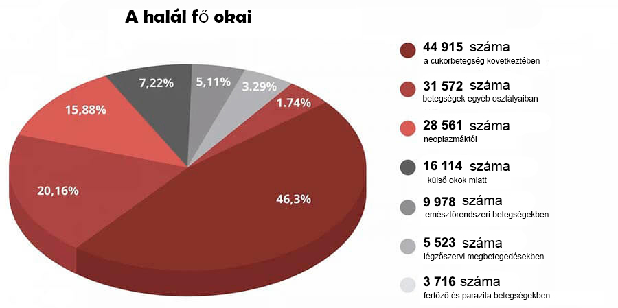

OUVERTURE INTERDITE: En 7 semaines, les globules rouges artificiels guérissent le diabète, abaissent la glycémie et renforcent incroyablement l'immunité!

Sur le tournage du prochain programme, il y avait une gêne, qui a mis dans une flaque «des sommités» de la médecine. L'un des experts invités a soudainement commencé à parler hors du scénario. Avec sa déclaration, il a stupéfié le public dans le studio. Mais surtout les autorités médicales l'ont compris.
Le chirurgien cardiaque a déclaré publiquement:Vous inondez les ondes d'informations sur le virus, mais vous fermez les yeux sur un problème qui touche plus de 1,3 million de personnes chaque année! Pourquoi personne ne parle de maladies endocriniennes? Pourquoi gardez-vous tous le silence sur le fait qu'il existe déjà un remède contre le diabète?
Diabète! Voilà qui est le principal tueur de personnes. Et vous prétendez tous que c'est ainsi que cela devrait être. Ne remarquez pas les outils avancés qui résolvent ce problème.
Le diabète est considéré comme l'une des maladies les plus dangereuses. Contrairement à de nombreuses autres maladies qui surviennent chez l'homme, elle n'entraîne pas de problèmes de santé temporaires, mais ne se développe que progressivement, amenant progressivement la personne à la tombe. Le diabète sucré est à l'origine de millions de morts douloureuses. C'est comme une bombe à retardement qui ne se déclenche pas nécessairement tout de suite, mais qui a 100% de chances d'exploser tôt ou tard. De plus, la situation est telle qu'aucun symptôme qui indiquerait l'apparition de complications mortelles n'existe tout simplement. Aujourd'hui, une personne est en bonne santé, mais demain, sa main lui est enlevée, sa jambe commence à pourrir ou une tumeur cancéreuse se développe dans sa tête. Et vous êtes stupéfaits et introduisez des mesures incroyables en raison d'une maladie presque asymptomatique, qui, de plus, n'apparaît pas maintenant, et il est peu probable qu'elle disparaisse quelque part.

Les gens meurent non pas à cause du virus, mais à cause du diabète et des complications qu'il provoque! Souvenez-vous de cela une fois pour toutes! » - a déclaré Mélanie Canel, l'une des experts invitées, mais d'autres membres se sont littéralement jetés sur elle, la bâillonnant.
Les statistiques sont choquantes! L'épidémie a fait 25 000 morts et près de 50 000 personnes sont mortes du diabète pendant la même période.
Et le plus drôle et le plus triste, c'est que 75,87% des cas graves de complications virales sont des personnes atteintes de diabète! S'ils n'avaient pas cette maladie, qui détruit sans pitié le système immunitaire, ils toléreraient tout de manière asymptomatique. Et c'est donc le principal groupe à risque. Et encore une fois, personne n'en parle, car la question se pose aussitôt - que faites-vous pour traiter cette maladie insidieuse?
La confusion a commencé dans le studio. Experts - les médecins des cliniques du Parc Monce ont commencé à se disputer, s'interrompant. La diffusion a été interrompue à la hâte et un bloc d'annonces a été rapidement lancé. Et Dorothée Chellier a été expulsée du studio par les gardes.
Cet épisode a été coupé de l'air. Mais le public du studio se souvient de cet incident depuis longtemps.
Nous avons décidé de mener notre propre enquête et avons retrouvé cet expert.

Christine Janin - médecin de la plus haute catégorie, candidate en sciences
médicales, professeur, spécialiste de premier plan des complications vasculaires du diabète
sucré.
- Simone Sédan, il semble que tous vos collègues soient au courant du scandale à la télé. Comment n'aviez-vous pas peur d'un tel acte?
- J'ai compris tous les risques, mais je ne pouvais plus me taire plus longtemps. Vous ne pouvez pas verser de vide à vide et ne pas proposer de traitement spécifique. Je suis médecin, j'ai prêté le serment d'Hippocrate et je le suis.
Je suis heureux que vous m'ayez contacté, car je peux répéter mes paroles à vos lecteurs. La pandémie passera, il y aura un vaccin, le monde y survivra, comme n'importe quelle épidémie avant. Mais le virus de la cupidité et de la vénalité restera avec nous, j'en ai peur pour toujours. Les vaccins n'ont pas encore été inventés pour ce virus.
- De quoi parlez-vous exactement?
- Qu'il y a des maladies qui, dans notre médecine, sont généralement traitées pendant des années. Je travaille avec les maladies endocriniennes, je suis engagé dans la réadaptation des personnes qui ont souffert de graves complications causées par le diabète. Et dans ma région, il y a beaucoup de tromperies.
Je suis sûr que, également dans le traitement du système musculo-squelettique, du tractus gastro-intestinal et de tout ce que vous voulez, vous pouvez le traiter en fonction des symptômes, en atténuant la condition, mais sans retrouver une pleine santé.
Et la raison en est les sociétés pharmaceutiques et leurs représentants médicaux, qui corrompent des médecins partout au pays. Et maintenant, quand les gens ont peur de chaque fer à repasser - pour les entreprises c'est généralement une fête. Vous pouvez vendre des tests, des désinfectants, des médicaments pour chaque symptôme séparément. Et en cas de décès, blâmez tout sur l'épidémie. Je vois tout cela et je me sens dégoûté.

Nous ne traitons pas le diabète sucré
- Vous voulez dire que tous les médicaments modernes contre le diabète sont inefficaces?
Les médicaments contre le diabète qui sont officiellement prescrits aux gens ont une fonction importante: ils pompent de l'argent des poches des malades dans les poches des oligarques médicaux.
Ce sont des drogues légales. Jugez par vous-même. Le patient prend une pilule, son état s'améliore. Le médicament cesse de fonctionner et la glycémie augmente à nouveau. C'est ainsi que fonctionnent tous les médicaments. Pour vous sentir bien, vous devez chercher une nouvelle"dose".
L'essentiel est de comprendre ceci: en cas d'urgence, les médicaments «chimiques» sont nécessaires et importants. Ils sauvent des vies lorsqu'une aide urgente est nécessaire. Pendant la Première Guerre mondiale, par exemple, l'héroïne était utilisée sur le champ de bataille pour empêcher les blessés de mourir de douleur.
Mais si vous prenez constamment des pilules, elles détruisent le corps. Tout comme l'héroïne. Pas si vite, mais le principe est le même. Et pour vous débarrasser des effets secondaires, vous serez vendu plus de pilules. Plus c'est mieux pour les pharmacies et l'industrie pharmaceutique.
- Mais les gens vivent de la drogue pendant des années
- Les toxicomanes peuvent aussi vivre assez longtemps. Mais de quel genre de vie s'agit-il?
Quand la pression monte. Lorsqu'ils ne sont pas des hommes âgés, un peu plus de 50 ans, ils gagnent une prostatite et perdent leur puissance. Lorsque la fatigue chronique et l'obésité apparaissent, les jambes commencent à gonfler, vous pouvez donc à peine marcher et vos doigts deviennent engourdis. Ensuite, il y a les troubles gastro-intestinaux et les calculs rénaux dus à l'excrétion intense de sels et de sucre.
Certaines pilules, avec une utilisation à long terme, sont généralement oncogènes. Regardez les statistiques sur le cancer - c'est une véritable épidémie.
Je ne parle même pas de bagatelles telles que les problèmes de sommeil, les acouphènes, la perte de vision. La liste peut être longue. Et il n'y a qu'une seule raison - une augmentation du taux de glucose dans le sang, et par conséquent - le diabète, que personne ne guérit. Bien que le produit soit déjà disponible et qu'il montre d'excellents résultats.
Un remède contre le diabète qui ne sera pas disponible en pharmacie
- Sur le plateau de l'émission, vous avez essayé de parler d'un médicament révolutionnaire pour le traitement du diabète, mais vous avez été littéralement expulsé du studio. Quel est ce remède? Pourquoi les pharmacies réagissent-elles à son nom comme les vampires à la lumière du soleil?
- J'ai commencé à parler d'un produit biologique . C'est un remède unique à base de vitamolécules végétales vivantes.
est un développement du centre de biologie moléculaire. Il est également communément appelé «globules rouges artificiels». Car, stimule la production de jeunes globules rouges, ce qui augmente la réponse de dégradation du glucose de plus de 7 fois! Ce qui conduit à la normalisation de la glycémie.
normalise le métabolisme intracellulaire du glucose pendant des années. Cela ne doit pas être pris tout le temps. Il guérit le diabète en seulement 7 semaines et le taux de sucre dans le sang sera de 4,5 mmol/L pendant les 5 prochaines années.
Pour le développement d', notre équipe de scientifiques a reçu un prix international en biologie thérapeutique. Pour une percée innovante dans le traitement du diabète sucré.
Il semblerait qu'après une telle reconnaissance, les pharmacies devraient faire la queue pour le droit de vendre de l'. L'État devrait adopter ce médicament. Mais non. Silence complet et mortel. Personne n'a semblé remarquer la percée.
Et les représentants du secteur médical ne traitent même pas le médicament avec haine. Ils ont des centaines de noms de médicaments, de ventes et de plans de revenus. Et ces plans ne peuvent être réalisés par un seul moyen. Les personnes après 7 semaines de traitement oublient leur chemin vers la pharmacie.
C'est pourquoi une telle haine pour . Il est impossible de le noircir. Pourtant, il y a une reconnaissance internationale, des certificats, des articles scientifiques, des milliers de patients satisfaits. Par conséquent, une stratégie de boycott a été choisie. Prétendez qu'un tel médicament n'existe pas. Et quand j'ai commencé à parler de lui en ondes, cela a provoqué une agression ouverte contre moi.
Lancement de l'auto-guérison du corps
- Qu'est-ce que l' aide?
L'objectif principal d' est de restaurer la fonction du pancréas à 100%. Telle est la base sur laquelle repose votre santé.
restaure les vaisseaux sanguins en 3 étapes:
- Restaure les récepteurs de l'insuline dans les tissus du corps humain, normalisant ainsi la production d'insuline dans le corps
- Réduit la glycémie après les premiers jours d'utilisation
- Restaure le niveau de "potassium complexe" et génère en même temps des cellules immunitaires spéciales qui démarrent le processus de régénération du pancréas
se démarre le processus de régénération et de renouvellement de tous les tissus du corps, des organes internes aux vaisseaux sanguins. Cela vous permet de vous débarrasser de tous les dommages que le corps a réussi à subir pendant la maladie.
Ce processus d'auto-guérison est appelé auto-régénération .Ces mécanismes sont définis par la nature, et est un catalyseur, une clé qui "lance " l'auto-régénération.
Débarrassez-vous de 7 maladies en 7 semaines
- Qu'obtiendrez-vous après le traitement ?
1. Normalisation des taux de glucose
Le médicament a un effet extrêmement utile, à savoir qu'il réduit la résistance à l'insuline. C'est une très belle propriété. Les composants biologiquement actifs du médicament pénètrent directement dans les cellules des muscles, de la graisse et du foie et les stimulent afin qu'ils commencent à mieux répondre à la présence de l'hormone dans le sang. En médecine, ce processus est appelé formation de cellules secondaires. En conséquence, au fil du temps, les cellules commencent à consommer plus de glucose actif, ce qui entraîne une diminution de sa concentration dans le sang. C'est le moyen le plus sûr pour le corps de consommer du glucose.
2. Restauration des vaisseaux sanguins
L'action principale d' est qu'il élimine non seulement le sucre du sang, mais normalise également les niveaux de glucose. Il dissout également le sucre qui a déjà pénétré les parois des vaisseaux sanguins. Ils, comme s'ils étaient libérés de la glace, acquièrent à nouveau la capacité de se contracter et de s'étirer. Les caillots sanguins se dissolvent, les vaisseaux sanguins sont éliminés. Les petits capillaires sont restaurés. En conséquence, la pression artérielle d'une personne n'augmente pas, la faiblesse et la somnolence disparaissent et la guérison des plaies et des coupures s'améliore.
3. Amélioration de l'état de la peau, des os et des muscles
Même la peau gravement endommagée est restaurée. Les ulcères guérissent, la peau cesse de suppurer et sèche. Il en va de même pour les os, leur composition saine est restaurée, ils cessent d'être fragiles. La récupération a lieu dans tous les tissus, les muscles deviennent élastiques.
4. Amélioration de l’acuité visuelle
Même la vision gravement endommagée commencera progressivement à se rétablir.
- L'acuité visuelle s'améliore de 0,5 à 2,1 unités.
- La pression oculaire est normalisée
- Les symptômes de la cataracte sont réduits
5. Se débarrasser de l'excès de poids
Le surpoids est quelque chose qui aggrave l'état d'un patient atteint de diabète sucré 4 à 5 fois. Par conséquent, l'une des actions d' est de perdre du poids. Ceci arrive pour deux raisons. Premièrement, les cellules commencent à transformer plus activement le sucre en énergie. Et deuxièmement, le complexe contient un extrait concentré fort d'Helianthus tuberosus, qui est un puissant brûleur de graisse naturel.
6. Normalisation de l'activité
De nombreux diabétiques sont impuissants. L'une des actions étonnantes d' est de normaliser les niveaux de testostérone et de restaurer une puissance saine. Même à l'âge vénérable de 70 ans, les hommes sont surpris de constater que la force masculine leur est revenue.
7. L'immunité commence à fonctionner
L'apport sanguin à la moelle osseuse s'améliore, ce qui est impliqué dans la production de cellules immunitaires. Cela conduit à une augmentation des défenses de l'organisme.
L'immunité n'est pas seulement un protecteur contre les virus. La fonction principale d'une forte immunité est de se protéger contre les cellules cancéreuses. Une forte immunité reconnaît et détruit les cellules cancéreuses avec le temps. Ne donne pas une tumeur à part entière.
Une immunité qui fonctionne à au moins 50% est déjà une barrière insurmontable contre les virus. Et cela est également très important aujourd'hui.
Le président du syndicat des pharmaciens a raccroché en entendant parler d'

Valérie Mathieu-Dubois. Président de l'Union des chaînes de pharmacies de la
France.
Nous avons appelé le pharmacien en chef et nous avons voulu savoir pourquoi aucune des pharmacies ne s'est insérée.
- Valérie Mathieu, bonjour! S'il vous plaît dites-moi pourquoi les pharmacies ignorent ? Avez-vous entendu parler de lui?
- Pourquoi fais-tu des provocations!? Je ne vais pas répondre à de telles questions !!! Ce ne sont pas du tout vos affaires!
- Bips ...
Comment s'inscrire
- Après une telle conversation avec le pharmacien en chef du pays, il est devenu clair que le médicament n'est pas et ne sera pas dans les pharmacies. Mais vous pouvez toujours l'obtenir, non?
- Oui, tous les citoyens du pays peuvent commander en ligne directement depuis l'usine.
- Pourquoi puis-je commander uniquement via Internet?
Ceci est fait pour trois raisons:
- Assurance qualité. est expédié directement de l'usine au client.
- Protection contre les intermédiaires. Pour que personne ne puisse en détacher entre 10 et 30 000 à la revente
- Livraison rapide par Nouvel émail
Réduction régionale pour les seniors
Tous ont maintenant un programme de fonds de soutien social. Dans le cadre de ce programme, vous pouvez commander avec une réduction. Cela a été fait dans le cadre d'un programme préférentiel de prévention du diabète.
La remise est principalement accordée aux personnes de plus de 47 ans vivant dans des régions où la situation épidémiologique est élevée.
Par conséquent, je recommande vivement: ne perdez pas votre temps! Il n'y aura pas de seconde chance. On ne sait pas combien de temps durera le programme ni combien de temps durera les fournitures insérées.
Obtenez maintenant!
Vous n'avez besoin que d'un téléphone mobile pour bénéficier de la prestation initiale.
Indiquez votre numéro dans le formulaire de demande et cliquez sur le bouton "Obtenir ".
Important! Une seule application pour 1 numéro de téléphone!
Désormais, les demandes sont acceptées et traitées 24 heures sur 24 . Mais en raison de la lourde charge de travail, vous devrez peut-être attendre un peu.
Attention!
Assurez-vous que le site possède un hologramme de sécurité:
L'hologramme de sécurité est une garantie de qualité à 100%. Il indique que vous êtes sur le site officiel et que le véritable vous sera envoyé et que les conseils et le soutien nécessaires vous seront fournis.
Commentaires